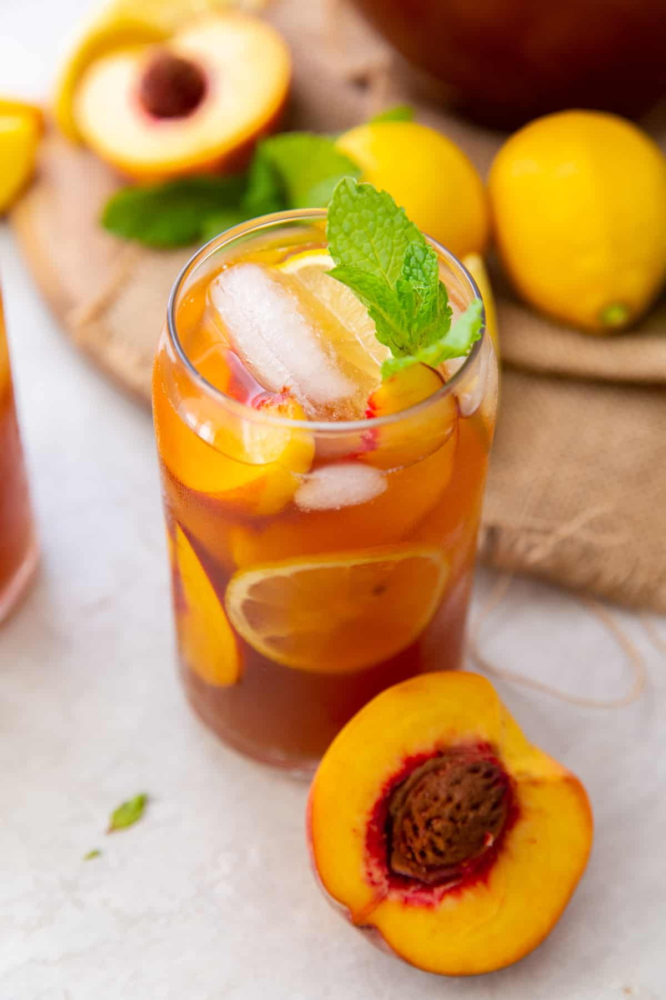

Description
This is a very light peach tea, great for a summer day.
Ingredients
- 3 cups water
- 3 family size tea bags
- 2 fresh peaches - peeled, pitted, and sliced
- 1 cup water
- 1½ teaspoons stevia powder
Steps
-
Bring 3 cups water to a boil in a saucepan over high heat. Add the tea
bags, and steep for 15 minutes. Remove tea bags.
-
Meanwhile, place peaches with 1 cup water into the jar of a blender, and
blend until very smooth. Pour the peach mixture, tea, and stevia powder
into a 1 gallon pitcher. Fill the pitcher to the top with water, and
stir until blended.